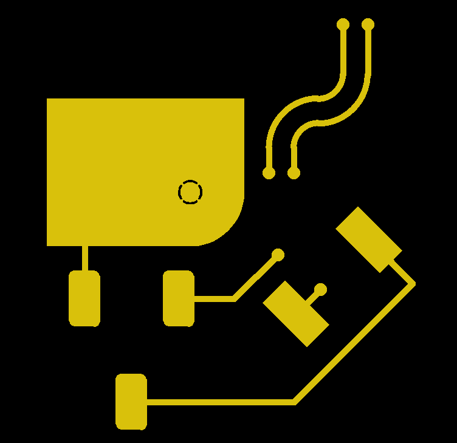
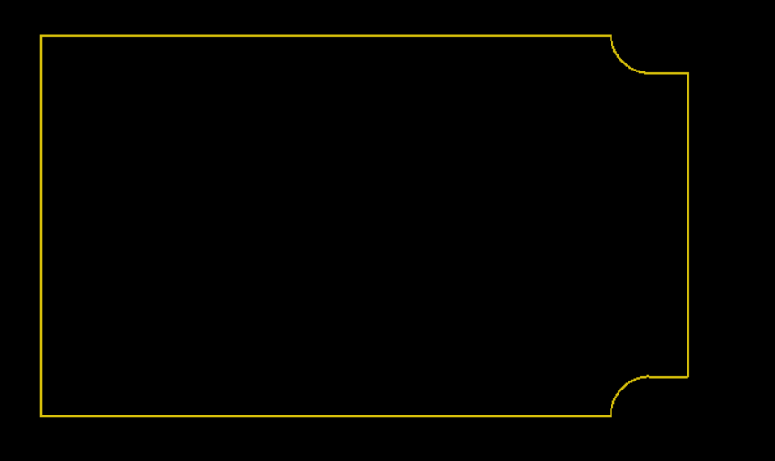

Tutorial and Reference
Gerber format - a primer
A Gerber file represents the image of PCB layer. The image is defined by an ordered list of graphics objects. File attributes identify the purpose of the file, e.g. it is the top copper layer. Object attributes identify the purpose of objects, e.g. that a pad is a via pad of component pad.
Graphics objects
There are three types of graphics objects:
- Pads
Pads are geometrics shapes replicated over the board, such as circles for via pads or rounded rectangles for SMD pads.
- Traces
These are either straight line or circular arc segments. They are typically used for traces in a copper plane, but are also used to plot text, etc.
- Regions
Regions are defined by their contours. They are typically used for copper pours, but they can also be used for a logo, etc.
Polarity
The file can have positive or negative polarity. In positive files image means presence of material, in negative files its absence. Solder mask layers are conventionally negative, and it is strongly recommended to stick to that convention. All other layers are best positive. Negative is also sometimes used for copper planes, but there is today no reason for it. It is just confusing. (Historically, with a technology no longer used since 50 years, there was a reason to do this. No longer. Move with the times.)
Graphics objects can have either positive or negative polarity. Positive is the normal polarity. Positive graphics objects are add to the image. Negative ones erase the image created by all preceding graphics objects. Thus, in the presence of negative objects, the order of the graphics object list is important.
Function
File function attributes identify the content or function of the file, e.g. ‘SolderMask,Top’ Valid file function attribute values are listed as .FileFunction values in the Gerber format specification. Without function the file is meaningless.
Object function attributes identify the function of the object, e.g. ‘ViaPad’, ‘Conductor’. Valid object values are listed as .AperFunction values in the Gerber format specification. This meta-information is essential for bare-board fabrication.
Specification
The Gerber layer format specification is available from the official Gerber format website.
Usage
DataLayer is the main class. First all graphics objects and attributes are added to the DataLayer, using the add methods provided. When the DataLayer is complete the dumps_gerber or dump_gerber methods return the Gerber string or output it as a Gerber file. On a layer there are typically many identical pads. To handle this efficiently one creates a padmaster instance, with a shape and function for instance to define a via pad. A range of built-in master pad classes provide for the typical pad shapes such as circle or rectangle with rounded corners, as well as a class to create pad masters with a user defined shape. The add_pad method replicates the padmaster at a given position and under a given angle.
A point is consistently represented by a tuple of two floats.
Files can be verified with the Reference_Gerber_Viewer on the offical Gerber format website.
Overview
General Classes
DataLayer - The main class, accumulate the graphics objects and output Gerbers.
Path - Define traces and regions.
Pad Master Classes
Circle - Pad master, circular
Rectangle - Pad master, rectangular
RoundedRectangle - Pad master, rectangle with rounded corners
ChamferedRectangle - Pad master, rectangle with chamfered corners
RegularPolygon - Pad master, regular polython
Thermal - Pad master, a circular thermal with straight corners
RoundedThermal - Pad master, a circular thermal with rouned corners
UserPolygon - Pad master, a user defined shape
Methods
set_generation_software - Identify the software that generated the Gerber file
Exceptions
TypeError and ValueError exceptions are thrown on invalid inputs.
Examples
Synthetic
>>> from gerber_writer import DataLayer
>>> from gerber_writer import (
... Path, set_generation_software,
... Circle, Rectangle, RoundedRectangle, RoundedThermal
... )
>>>
>>> set_generation_software('Karel Tavernier', 'gerber_writer_example.py', '2022.06')
>>> trace_width = 0.254
>>> via_pad = Circle(0.508, 'ViaPad')
>>> top = DataLayer('Copper,L1,Top,Signal', negative=False)
>>>
>>> # Footprint of IC17
>>> IC17_toe = Rectangle(1.27, 2.54, 'SMDPad,CuDef')
>>> top.add_pad(IC17_toe, (65.094, 47.269), 45)
>>> top.add_pad(IC17_toe, (68.047, 50.267), 45)
>>> # Connect one pin to via
>>> top.add_trace_line((65.094, 47.269), (65.094+1, 47.269+1), trace_width, 'Conductor')
>>> top.add_pad(via_pad, (65.094+1, 47.269+1))
>>>
>>> # Footprint of IC16
>>> IC16_toe = RoundedRectangle(1.257, 2.286, 0.254, 'SMDPad,CuDef')
>>> footprint = ((56.515, 47.879), (60.341, 47.879), (58.428, 43.700))
>>> for toe_location in footprint:
... top.add_pad(IC16_toe, toe_location)
>>> # Connect pin 2 to via
>>> top.add_trace_line(footprint[1], (62.549, 47.879), trace_width, 'Conductor')
>>> top.add_trace_line((62.549, 47.879), (64.350, 49.657), trace_width, 'Conductor')
>>> top.add_pad(via_pad, (64.350, 49.657))
>>> # Connect pin 3 to IC17
>>> p1 = (65.000, 43.700)
>>> p2 = (65.000+4.8, 43.700+4.8)
>>> p3 = (68.047, 50.267)
>>> con_3_IC17 = Path()
>>> con_3_IC17.moveto(footprint[2])
>>> con_3_IC17.lineto(p1)
>>> con_3_IC17.lineto(p2)
>>> con_3_IC17.lineto(p3)
>>> top.add_traces_path(con_3_IC17, trace_width, 'Conductor')
>>>
>>> # Copper pour, rectangle with one rounded corner
>>> x_lft = 55
>>> x_rgt = 63
>>> y_bot = 50
>>> y_top = 56
>>> radius = 2.2
>>> pour = Path()
>>> pour.moveto((x_lft, y_bot))
>>> pour.lineto((x_rgt - radius, y_bot))
>>> pour.arcto((x_rgt, y_bot + radius), (x_rgt - radius, y_bot + radius), '+')
>>> pour.lineto((x_rgt, y_top))
>>> pour.lineto((x_lft, y_top))
>>> pour.lineto((x_lft, y_bot))
>>> top.add_region(pour, 'Conductor')
>>> # Thermal relief pad in copper pour
>>> top.add_pad(RoundedThermal(1, 0.8, 0.06, 'ThermalReliefPad', negative=True),
... (x_rgt - radius, y_bot + radius), angle=45)
>>> # Embedded via pad in copper pour
>>> top.add_pad(via_pad, (x_lft + radius, y_top - radius))
>>> # Connect pin one of IC16 to copper pour
>>> top.add_trace_line(footprint[0], (56.515, 47.879+2.54), trace_width, 'Conductor')
>>>
>>> # Connect vias, with arcs, parallel
>>> trace_start = (64, 53)
>>> top.add_pad(via_pad, trace_start)
>>> connection_a = Path()
>>> connection_a.moveto(trace_start)
>>> connection_a.lineto((trace_start[0], trace_start[1]+1))
>>> connection_a.arcto((trace_start[0]+2, trace_start[1]+3), (trace_start[0]+2, trace_start[1]+1), '-')
>>> connection_a.arcto((trace_start[0]+3, trace_start[1]+4), (trace_start[0]+2, trace_start[1]+4), '+')
>>> connection_a.lineto((trace_start[0]+3, trace_start[1]+6))
>>> top.add_traces_path(connection_a, trace_width, 'Conductor', negative=False)
>>> top.add_pad(via_pad, (trace_start[0]+3, trace_start[1]+6), 0)
>>> trace_start = (65, 53)
>>> top.add_pad(via_pad, trace_start)
>>> connection_b = Path()
>>> connection_b.moveto(trace_start)
>>> connection_b.lineto((trace_start[0], trace_start[1]+1))
>>> connection_b.arcto((trace_start[0]+1, trace_start[1]+2), (trace_start[0]+1, trace_start[1]+1), '-')
>>> connection_b.arcto((trace_start[0]+3, trace_start[1]+4), (trace_start[0]+1, trace_start[1]+4), '+')
>>> connection_b.lineto((trace_start[0]+3, trace_start[1]+6))
>>> top.add_traces_path(connection_b, trace_width, 'Conductor')
>>> top.add_pad(via_pad, (trace_start[0]+3, trace_start[1]+6), 0)
>>>
>>> # Write gerber file (to null device because this is a doctest)
>>> import os
>>> with open(os.devnull, 'w') as null_device:
... top.dump_gerber(null_device)
This gerber file creates the following image:
{kind=link}
A PCB Profile
>>> from gerber_writer import (DataLayer, Path, set_generation_software)
>>>
>>> set_generation_software('Karel Tavernier', 'gerber_writer_example_outline.py', '2022.06')
>>> profile_layer = DataLayer('Profile,NP')
>>> profile = Path()
>>> profile.moveto((0, 0))
>>> profile.lineto((150, 0))
>>> profile.arcto((160, 10), (160, 0), '-')
>>> profile.lineto((170, 10))
>>> profile.lineto((170, 90))
>>> profile.lineto((160, 90))
>>> profile.arcto((150, 100), (160, 100), '-')
>>> profile.lineto((0, 100))
>>> profile.lineto((0, 0))
>>> profile_layer.add_traces_path(profile, 0.5, 'Profile')
The Gerber output files creates the following image:
{kind=link}
Use of NamedTuple
Points in the plane are consistently represented as a Tuple[float, float]. The user can define his own NamedTuple and use it with this API:
>>> from gerber_writer import Circle, DataLayer
>>> from typing import NamedTuple
>>> class Pnt(NamedTuple):
... x: float
... y: float
>>> via = Circle(0.1, 'ViaPad')
>>> copper_bot = DataLayer('Copper,L4,Bot')
>>> origin = Pnt(0, 0)
>>> copper_bot.add_pad(via, origin)
Main Classes Reference
- class gerber_writer.writer.DataLayer(function: str, negative=False)
Accumulate the graphics objects of a PCB layer, when complete output it as Gerber file.
- Parameters:
function (str) – Function of the layer e.g. ‘Soldermask,Bot’. See .FileFunction values in the Gerber specification.
negative (bool) – Polarity, negative if True, positive if False (default)
DataLayer Methods Overview:
__init__ - Set layer attributes function and polarity
__repr__ - Return a display of the attributes and the list of graphics objects
__len__ - Return the number of graphics objects in the DataLayer instance
add_pad - Add a pad to the DataLayer instance
add_trace_line - Add a straight line trace to the DataLayer instance
add_trace_arc - Add a circulare are trace to the DataLayer instance
add_trace_Path - Add traces to the DataLayer instance by stroking a Path
add_region - Add a region to the DataLayer instance
dumps_gerber - Return a Gerber string representing the DataLayer instance
dump_gerber - Write a Gerber file representing the DataLayer instance
DataLayer Methods Reference:
- add_pad(master, position: Tuple[float, float], angle: float = 0)
Add a pad graphics object to the DataLayer instance.
- Parameters:
master – The pad master, which defines the pad shape, function and whether it is negative.
position (Tuple[float, float]) – The point where the pad master is replicated.
angle (float) – The rotation angle under which the pad master is replicated. Default 0.
- Example:
>>> top = DataLayer('Copper,L1,Top') >>> via_pad = Circle(0.254, 'ViaPad') >>> smd_pad = Rectangle(1, 3, 'SMDPad,CuDef') >>> top.add_pad(via_pad, (1.5, -2.5)) >>> top.add_pad(via_pad, (2.5, -2.5)) >>> top.add_pad(smd_pad, (5, -2.5), 45)
- add_region(path: Path, function: str, negative: bool = False)
Add a region graphics object to the DataLayer.
- Parameters:
path (Path) – The path object whose subpaths are the contours describing the region
funcion (str) – The function of the region, e.g. ‘Conductor
negative (bool) – The region is negative if True, positive if False (default)
- Example:
>>> from gerber_writer import DataLayer, Path >>> copper_top = DataLayer('Copper,L1,Top') >>> d_shape = Path() >>> d_shape.moveto((0, 0)) >>> d_shape.lineto((1, 0)) >>> d_shape.arcto((1 ,1), (1, 0.5), '+') >>> d_shape.lineto((0, 1)) >>> d_shape.lineto((0, 0)) >>> copper_top.add_region(d_shape, 'Conductor') >>> len(copper_top) 1
The fundamental requirement for regions is that all subpaths must be closed, meaning that their end point exactoy coincides with the start point. Furthermore, the contours cannot be self-intersecting. For more information about valied contours see the Gerber Layer Fo(rmat specification _ section 4.10.3.
- add_trace_arc(start: Tuple[float, float], end: Tuple[float, float], center: Tuple[float, float], orientation: str, width: float, function: str, negative: bool = False)
Add circular arc trace to DataLayer.
- Parameters:
start (Tuple[float, float]) – Start point of the arc segment
end (Tuple[float, float]) – End point of the arc segment
center (Tuple[float, float]) – Center of the arc segment
orientation (str) – Orientation of the arc segment, either ‘+’ or ‘-’
width (float) – Width of the line segment
function (str) – Function of the line segment, e.g. ‘Conductor’
negative (bool) – The line is negative if True, positive if False; default positive.
- Example:
>>> top = DataLayer('Copper,L1,Top') >>> top.add_trace_arc((0, 0), (1, 1), (1, 0), '-', 0.1, 'Other,Test')
- add_trace_line(start: Tuple[float, float], end: Tuple[float, float], width: float, function: str, negative: bool = False)
Add straight line trace to DataLayer.
- Parameters:
start (Tuple[float, float]) – Start point of the line segment
end (Tuple[float, float]) – End point of the line segment
width (float) – Width of the line segment
function (str) – Function of the line segment, e.g. ‘Conductor’
negative (bool) – The line is negative if True, positive if False; default positive
- Example:
>>> top = DataLayer('Copper,L1,Top') >>> top.add_trace_line((0, 0), (1, 1), 0.1, 'Other,Test', False)
- add_traces_path(path: Path, width: float, function: str, negative: bool = False)
Add traces by stroking a path.
- Parameters:
path (Path) – The path that is to be stroked to create sequences of line and arc traces
width (float) – Width of the traces
function (str) – Function of the traces
negative (bool) – The region is negative if True, positive if False; default positive
- Example:
>>> from gerber_writer import DataLayer, Path >>> copper_top = DataLayer('Copper,L1,Top') >>> connection = Path() >>> connection.moveto((0, 0)) >>> connection.lineto((1, 0)) >>> connection.arcto((1 ,1), (1, 0.5), '+') >>> copper_top.add_traces_path(connection, 0.1, 'Conductor') >>> len(copper_top) 1
- dump_gerber(gerber_file)
Write a gerber file representing the DataLayer.
- Parameters:
gerber_file (file_object) – The output Gerber file
- dumps_gerber() str
Return a string in Gerber format representing the DataLayer.
- class gerber_writer.writer.Path
Curves that can be filled to create regions or stroked to create traces.
Paths are used to define traces and regions (copper pours). A path is composed of straight and circular arc line segments, which may connect to one another or may be disconnected. A pair of segments are said to connect only if they are defined consecutively, with the second segment starting where the first one ends. Thus, the order in which the segments of a path are defined is significant. Nonconsecutive segments that meet or intersect fortuitously are not considered to connect. A path is made up of one or more disconnected subpaths, each comprising a sequence of connected segments.
In general, the topology of the path is unrestricted: it may be concave or convex, may contain multiple subpaths representing disjoint areas, and may intersect itself in arbitrary ways.
However, when used to define regions, there are restrictions. The main one is that all subpaths must be closed contours, their end point must be equal to their start point. See the DataLayer.add_region method for more details.
- Example:
>>> # Define a region with one contour. >>> from gerber_writer import Path >>> d_shape = Path() >>> d_shape.moveto((0, 0)) >>> d_shape.lineto((1, 0)) >>> d_shape.arcto((1 ,1), (1, 0.5), '+') >>> d_shape.lineto((0, 1)) >>> d_shape.lineto((0, 0)) >>> len(d_shape) 5
- arcto(end: Tuple[float, float], center: Tuple[float, float], orientation: str)
Construction operator. Add circular arc segment from current point to end point to the current subpath.
- Parameters:
end (Point) – end point of added segment
center (Point) – center point of arc
orientation (str) – arc orientation, either ‘+’ or ‘-’
- lineto(end: Tuple[float, float])
Construction operator. Add straight line segment from current point to end point to the current subpath.
- Parameters:
end (Point) – end point of added segment
- moveto(to: Tuple[float, float])
Construction operator. Move the current point and start new subpath.
- Parameters:
to (Point) – start point of next subpath
- gerber_writer.writer.Point
Point in 2D image plane.
alias of
Tuple[float,float]
- gerber_writer.writer.set_generation_software(vendor: str, application: str, version: str)
Add a statement in the Gerber file that identifies the software aaplication generating it.
- Parameters:
vendor (str) – The name of the vendor (or developer, IP onwner, project …)
application (str) – The name of the application itslelf
version (str) – The version id of the application
For more information see the Gerber layer format specification section 5.6.7
- Example:
>>> import gerber_writer >>> gerber_writer.set_generation_software('KiCad', 'Pcbnew', '(2017-02-08 revision 0dc1193)-master')
Padmaster Classes Reference
A padmaster has the following attributes:
shape: Geometric shape, e.g. rectangle
function: A pad function, e.g. ‘ViaPad’
polarity: Positive or negative
Padmasters are used to create pads by replicating them
at a given point on the 2D plane
under a given angle
- class gerber_writer.padmasters.ChamferedRectangle(x_size: float, y_size: float, cutoff: float, function: str, negative: bool = False)
A pad master, an axis-aligned rectangle with chamfered corner.
- Parameters:
x_size (float) – Size along x-axis
y_size (float) – Size along y-axis
cutoff (float) – Cutoff distance from corner for the chamfer
function (str) – Function of the pads e.g. ‘SMDPad,CuDef’
negative (bool) – Polarity, negative if True, positive if False (default)
- class gerber_writer.padmasters.Circle(diameter: float, function: str, negative: bool = False)
A pad master with circular shape.
A pad master serves to add pads to the graphics objects list. It defines their geometric shape, function and polarity (positive or negative). The function attribute specifies what the funtions is of the pad, e.g. ‘ViaPad’ or ‘ComponentPad’. See .AperFunction values in the Gerber format specification.
- Parameters:
diameter (float) – Diameter of the circular pads
function (str) – Function of the pads e.g. ‘ViaPad’
negative (bool) – Polarity, negative if True, positive if False (default)
- class gerber_writer.padmasters.Rectangle(x_size: float, y_size: float, function: str, negative: bool = False)
A pad master with an axis-aligned rectangular shape.
- Parameters:
x_size (float) – Size along x-axis
y_size (float) – Size along y-axis
function (str) – Function of the pads e.g. ‘SMDPad,CuDef’’
negative (bool) – Polarity, negative if True, positive if False (default)
- class gerber_writer.padmasters.RegularPolygon(outer_diameter: float, vertices: int, function: str, negative: bool = False)
A pad master, with shape a regular convex polygon.
One vertex is on the positive x-axis.
- Parameters:
outer_diameter (float) – Outer diameter, or diameter of the circumscribed circle
vertices (int) – Number of vertices
function (str) – Function of the pads e.g. ‘FiducialPad,Local’
negative (bool) – Polarity, negative if True, positive if False (default)
- class gerber_writer.padmasters.RoundedRectangle(x_size: float, y_size: float, radius: float, function: str, negative: bool = False)
A pad master, an ax-s-aligned rectangle with rounded corners.
- Parameters:
x_size (float) – Size along x-axis
y_size (float) – Size along y-axis
radius (float) – Radius of the corner rounding
function (str) – Function of the pads e.g. ‘SMDPad,CuDef’’
negative (bool) – Polarity, negative if True, positive if False (default)
- class gerber_writer.padmasters.RoundedThermal(outer_diameter: float, inner_diameter: float, gap: float, function: str, negative: bool = False)
A pad master, circular thermal with four axis-aligned rounded gap openings.
- Parameters:
outer_diameter (float) – Outer diameter of the thermal
inner_diameter (float) – Inner diameter of the thermal
gap (float) – Gap or conductor width beteen thermal barriers along the axis
function (str) – Function of the pads e.g. ‘ThermalReliefPad’
negative (bool) – Polarity, negative if True, positive if False (default)
- class gerber_writer.padmasters.Thermal(outer_diameter: float, inner_diameter: float, gap: float, function: str, negative: bool = False)
A pad master, circular thermal with four axis-aligned straight gap openings.
- Parameters:
outer_diameter (float) – Outer diameter of the thermal
inner_diameter (float) – Inner diameter of the thermal
gap (float) – Gap or conductor width beteen thermal barriers along the axis
function (str) – Function of the pads e.g. ‘ThermalReliefPad’
negative (bool) – Polarity, negative if True, positive if False (default)
- class gerber_writer.padmasters.UserPolygon(polygon: tuple, function: str, negative: bool = False)
A pad master with a user defined shape.
The shape is defined by its polygon outline or contour The outline must be closed: the last vertex must coincide with the first one. For more information about valied contours see the Gerber Layer Format specification _ section 4.10.3. The reference point, this is the point used to put the pad in the plane with add_pad, is the origin of the coordinate system used to define the outline
- Parameters:
polygon (int) – A tuple with the vertices of the polygon; each vertex is a tuple (x, y)
function (str) – Function of the pads e.g. ‘TestPad’
negative (bool) – Polarity, negative if True, positive if False (default)